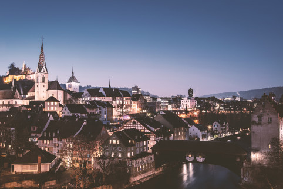
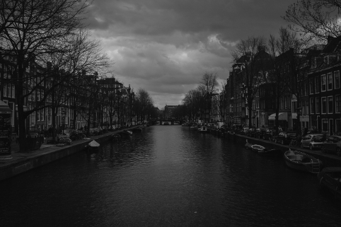
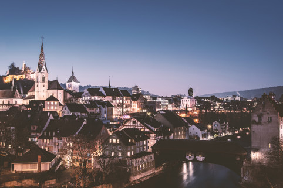
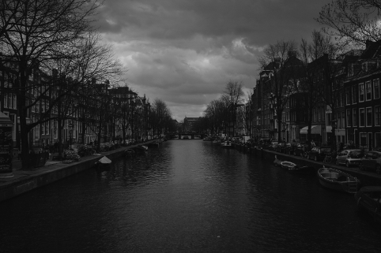
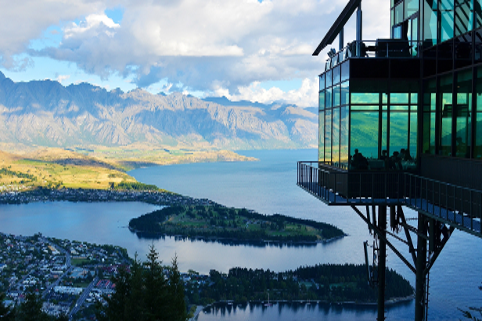
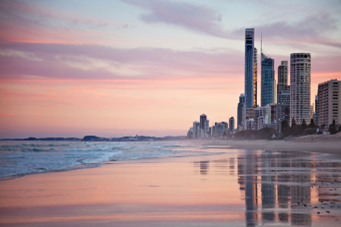
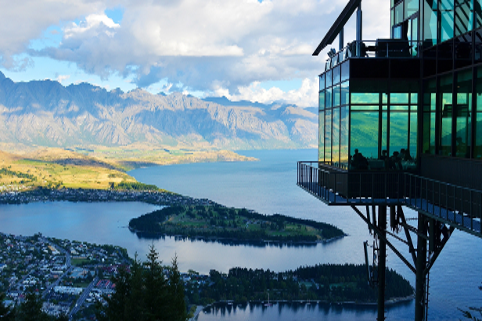
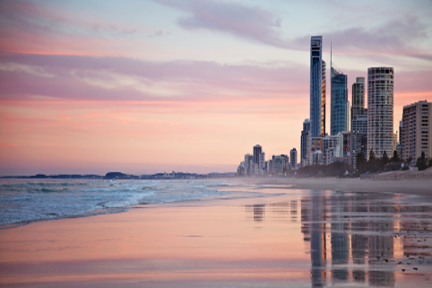

I quit mechanical engineering in my senior year at the University of Cincinnati. My experiences at companies and projects such as L'Oréal, Boston Scientific, and Formula SAE, told me that continuing wasn't a sustainable option. I switched majors and graduated about a year later, but was still unsure of a career.
I hustled. I was able to pay off 6.5 years of college loans within 3 months of graduating. Since 2013, I carved my own path as a globetrotter, an entrepreneur, a success, and a failure. All the while continuing to be a student. I am passionate about my pursuits and thrust my enirety into my goals. My attitude and character carry over into my journey as a full-stack web developer.


 



 



I love to travel! After college, I adventured for about 3 years, while operating my businesses remotely. I especially enjoy hiking and scuba diving; fortunately, both are available in Ohio. I've always got my hands around a good book or am seeking out mentors who specialize in something I'm interested in. While traveling, I seized a business opporunity which eventually inspired me to become a web developer.
I was a late bloomer. There was a matchmaker, Facebook Ads, who first introduced me to the appeal of programming. It was an advertisement for one of the many programming bootcamps.
Even you can become a full stack developer within 3 months! No programming experience necessary!Get a $100k+ job immediately! No tuition payments until you've landed a job! Google, Apple, Facebook hire our graduates!
And so I began my courtship. The first time I ever looked at code was around January 2017. I bought books, coded through Codecademy and by March I was able to solve Fizz Buzz and start some Code Wars problems. I started dating with an in-person pre-bootcamp in San Francisco for a few weeks, returned to Columbus for additional practice, and after considering the many options, enrolled in Thinkful's online bootcamp by August.
These past 10 months were bumpy, but I'm glad to say my relationship with programming progresses and I couldn't be happier. Programming always seemed like magic to me. I'm glad the mystery has been unveiled, yet it still amazes me that nearly anything I can think of can be built with some logic, tea, and a lot of Stack Overflow.
I full-stack web apps with Javascript, NodeJS, and Express. I use both SQL and nonSQL Databases as well as Angular 2+ and React.